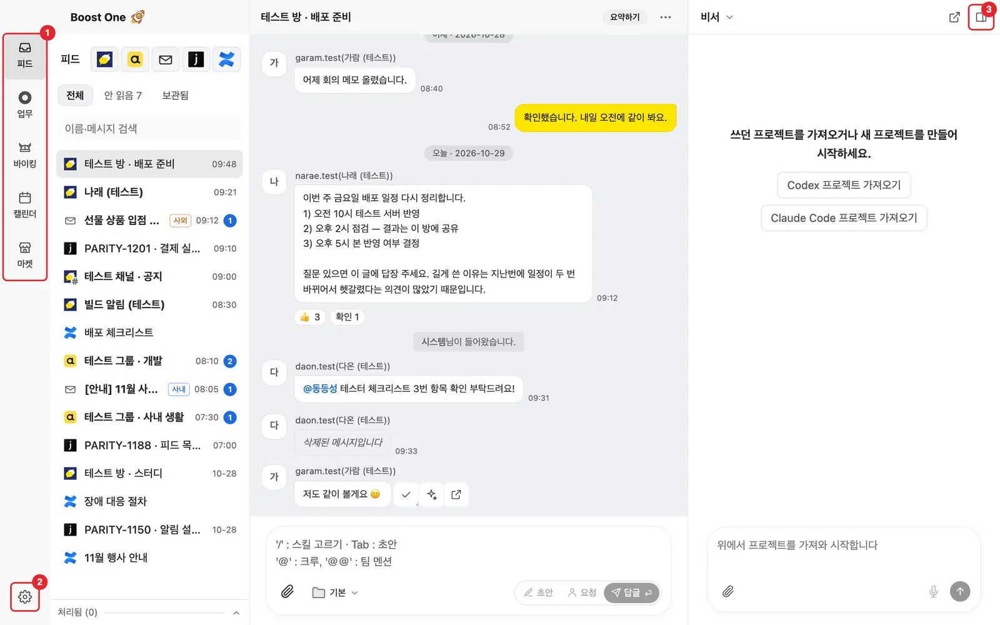
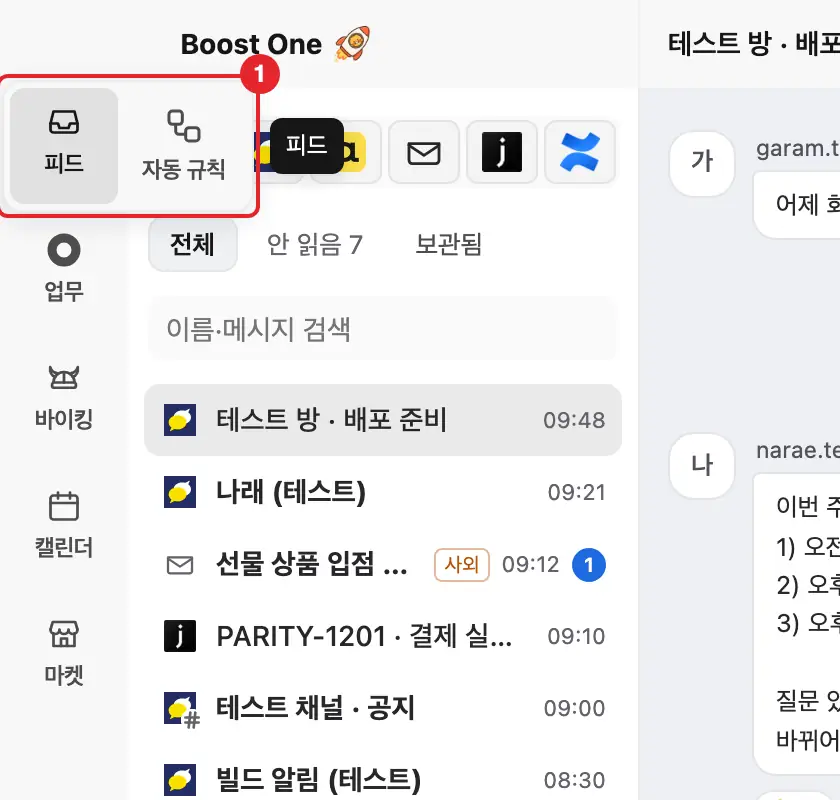
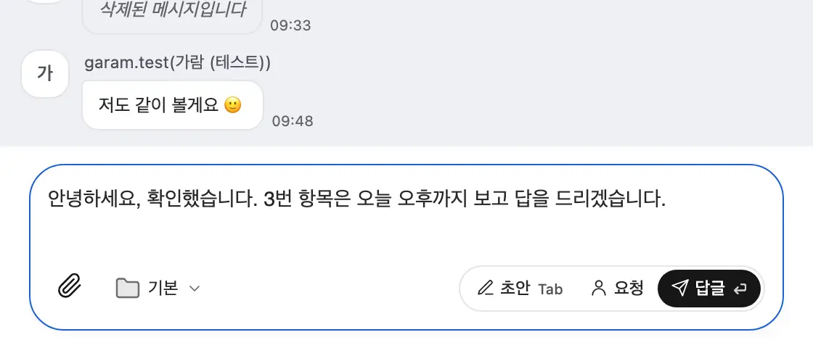
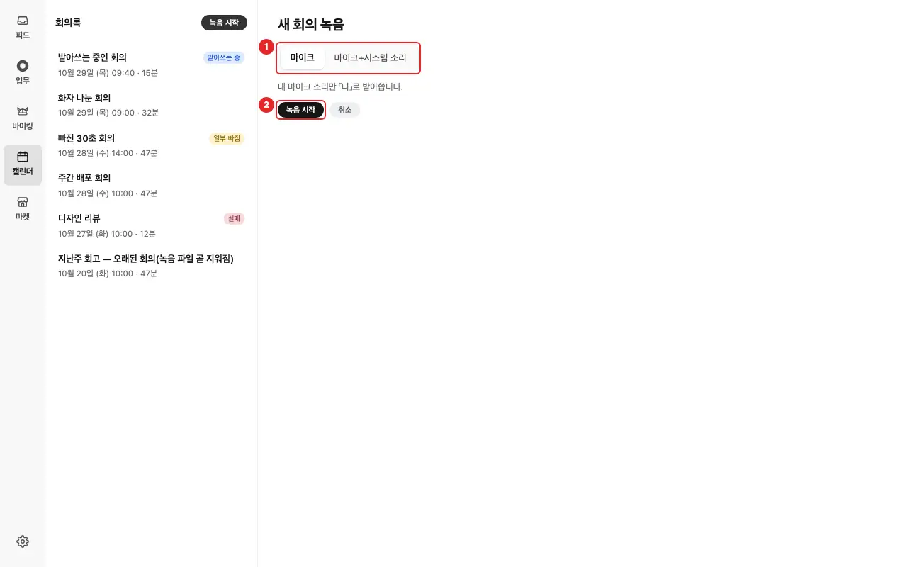
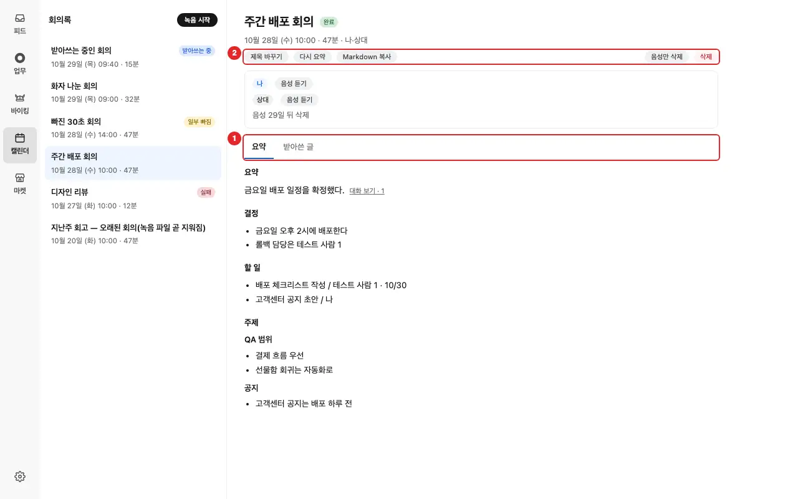
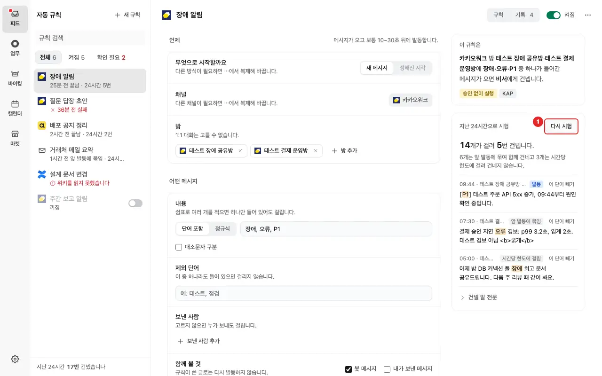
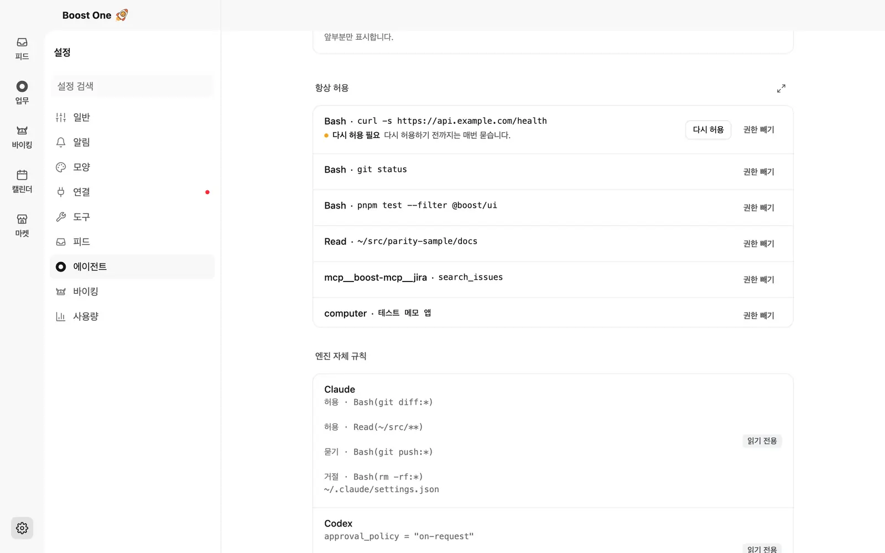

01 시작하기
첫 실행과 화면 구성
로그인·확장·알림 안내, 아이콘 줄과 사이드챗, 연결 끊김 띠, 업데이트, 다크 테마.

Boost One 은 카카오 사내 데스크톱 AI 업무 허브입니다. 카카오워크·아지트·메일·지라·위키의 글을 한 피드로 모으고, Claude·Codex·KAP 에이전트에게 일을 맡기며, 캘린더·회의록·자동 규칙·칸반·원격 제어까지 한 화면에서 다룹니다.

왼쪽 아이콘 줄, 가운데 작업 화면, 오른쪽 사이드챗의 3단 구성입니다. 아이콘에 마우스를 올리면 숨은 두 번째 단추(자동 규칙·작업 보드·회의록)가 나타납니다.
고른 메뉴의 본 화면입니다. 업무 탭은 그 자체가 에이전트 대화 화면이고, 피드는 채널별 글 목록, 캘린더는 Google 캘린더 일정입니다. 아이콘 위 숫자는 확인 안 한 초안·요청·새 스킬 수를 뜻합니다.
「피드」와 「바이킹」 화면에 붙는 작은 대화창입니다. 다른 화면을 보면서 「비서」나 진행 중인 요청과 대화하고, 「크게 보기」로 큰 화면에서 이어 갑니다.

처음 실행하면 안내 상자가 하나씩 차례로 뜹니다. 앞 상자를 닫아야 다음 상자가 뜹니다.

사내 KB 계정 하나로 로그인합니다. 기본 브라우저에서 로그인을 마치면 앱이 저절로 넘어갑니다.

웹스토어에서 확장을 추가하면 앱과 자동으로 연결됩니다. 「나중에」도 가능합니다.
가이드 11개 장을 장마다 대표 화면 3장으로 정리했습니다. 그림을 누르면 크게 보이고, 「그림 전체 보기」에서 가이드의 그림 223장을 장·절별로 모두 볼 수 있습니다.
로그인·확장·알림 안내, 아이콘 줄과 사이드챗, 연결 끊김 띠, 업데이트, 다크 테마.
Claude 사내 게이트웨이 연결, 엔진별 남은 한도와 회사 예산, 도구 켜고 끄기, 「항상 허용」 권한 회수, 지침 출처 선택.


프로젝트 폴더를 골라 Claude·Codex·KAP 중 하나에게 일을 맡깁니다. 서브에이전트, 동료 초대, 터미널 대화 가져오기.
할 일·진행·막힘·확인·완료 5열. 카드를 지시문 슬롯에 놓으면 그 작업 대화에 지시가 갑니다. 팀 판은 「WeWork」.
카카오워크·아지트·메일·지라·위키 글을 읽고 답하고, ✦로 비서에게 맡겨 답장 초안을 받습니다. 본문 검색, 메일 분류 트리.



일정 보기·만들기, 회의실 고르기, 쌓인 초대에 한꺼번에 답하기, 조직도로 동료·팀 일정 겹쳐 보기, 녹음 예약.


녹음과 받아쓰기는 이 PC에만 남고, 요약할 때만 받아쓴 글이 고른 모델(기본 KAP)로 갑니다. 요약·결정·할 일 정리, 화자 이름 붙이기.



정한 조건의 메시지가 오거나 정한 시각이 되면 비서나 세션에 일을 건넵니다. 저장 전 시험, 켜고 끄기, 실행 기록.



바이킹(사내 앱 플랫폼)에 올린 앱 하나를 골라 에이전트에게 화면·데이터 수정을 맡깁니다. 앱 방으로 동료와 함께 작업.
밖에서 비서 1:1 DM으로 일을 맡기고, 대화별 세션 방을 만들고, 자리 비운 사이의 승인·질문에 카카오워크로 답합니다.
동료가 올린 스킬을 설치해 주간 보고·회의록 정리 같은 반복 업무를 맡기고, 플러그인으로 Sentry·Notion 같은 외부 서비스를 연결합니다.
가이드에 적힌 동작에서 읽어 낸, 사내 AI 업무 허브를 만들 때 참고할 만한 선택들입니다.
앱 계정은 KB 계정 하나입니다. Claude 는 사내 LLM 게이트웨이로 연결하고, 예전 방식(Bedrock 직접 연결, 팀플랜 직접 로그인)은 노란 카드로 끊기는 날을 알립니다.
엔진별 남은 한도를 「N% 남음」 막대로 보여 주고, 게이트웨이 예산(예: $850 / $1,000 · 30일)을 표시합니다. 80%를 넘으면 「한도 상향」 신청 단추가 나타납니다.

에이전트 동작은 승인 카드로 묻고, 「항상 허용」으로 넣은 권한은 목록에서 한 줄씩 「권한 빼기」로 회수합니다. 다른 앱 조작은 기본으로 꺼져 있습니다.

에이전트가 읽는 전역 지침을 Codex(AGENTS.md)나 Claude(CLAUDE.md)와 동기화하거나 직접 파일을 고릅니다. 이미 쓰던 규칙을 새로 쓰지 않아도 됩니다.
작업 보드의 「진행」 열 위 슬롯에 지시문이나 스킬을 정해 두고, 카드를 놓으면 그 작업 대화에 지시가 갑니다. 여러 카드를 골라 한꺼번에 보낼 수도 있습니다.

PC 앞에 없어도 카카오워크 DM으로 일을 맡기고 승인에 답합니다. 그룹방에서는 동료가 「@비서」로 내 에이전트에게 부탁할 수 있습니다.
팀 AI 실습에서 쓰는 개념이 Boost One 에서 어느 메뉴에 해당하는지 짝지었습니다.
| 실습 용어 | Boost One 메뉴 | 하는 일 |
|---|---|---|
| 지침 (AGENTS.md / CLAUDE.md) | 설정 › 에이전트 › 지침 출처 | 에이전트가 대화를 시작할 때 읽는 전역 규칙 파일을 고릅니다. |
| 스킬 | 마켓 › 스킬 | 자주 하는 일을 정해진 방식으로 맡기도록 스킬을 설치하고 공유합니다. |
| 예약 작업 | 자동 규칙 (정해진 시각) | 정한 시각이나 조건이 되면 비서나 세션에 일을 건넵니다. |
| 팀 작업 | 작업 보드 › WeWork | 팀·프로젝트 공간의 공유 판에서 담당자와 상태를 관리합니다. |
짝짓기는 작성자가 가이드 내용을 보고 정리한 것이며, 공식 가이드의 표현은 아닙니다.